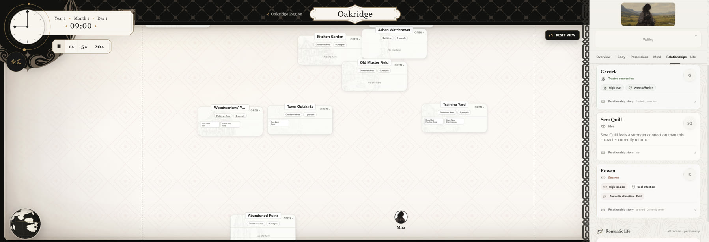
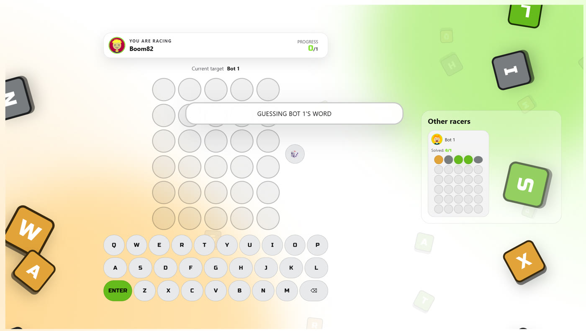
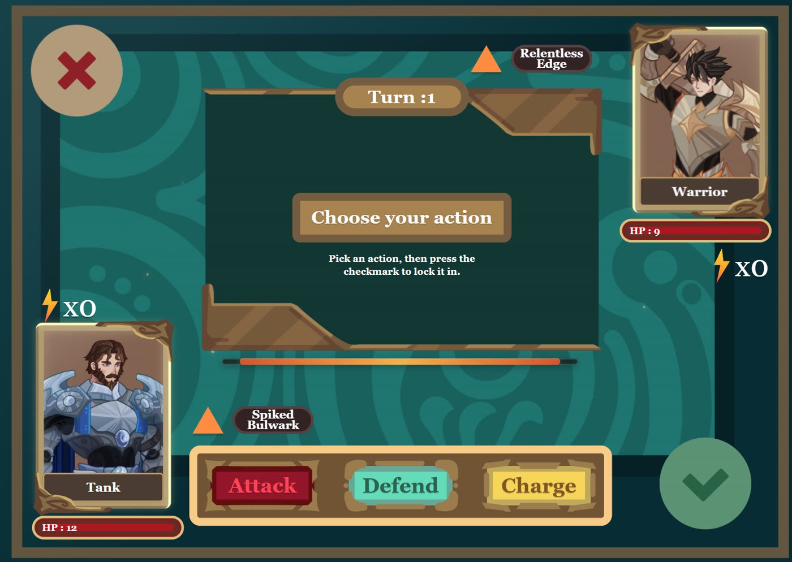
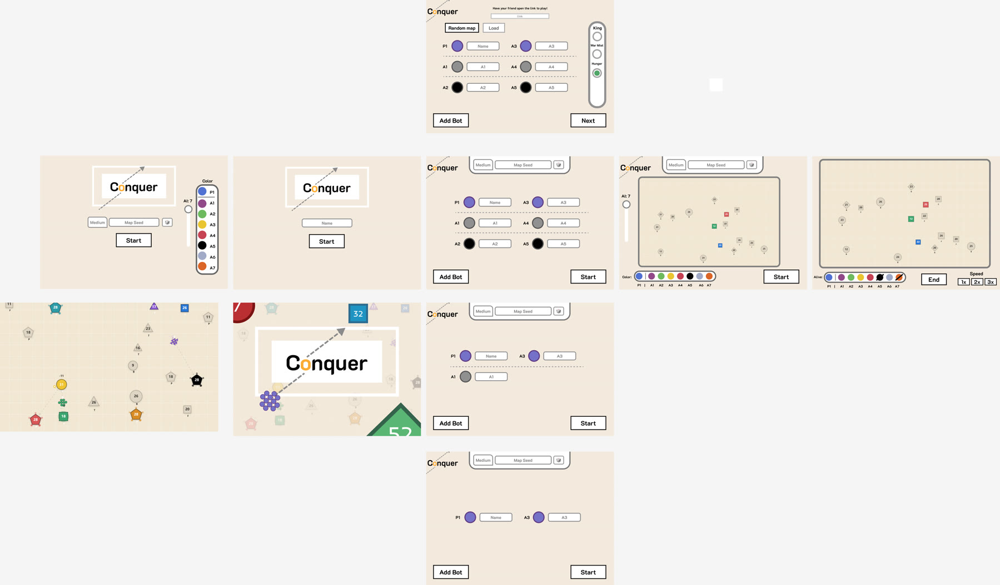
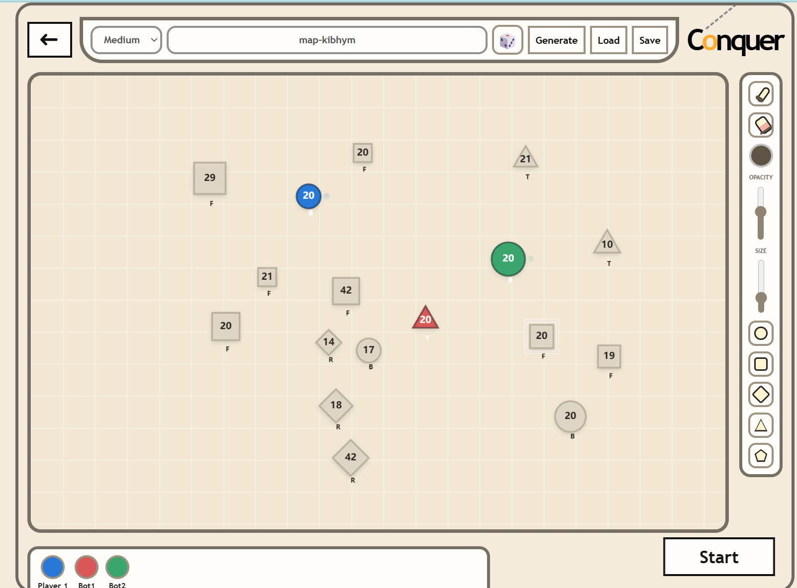
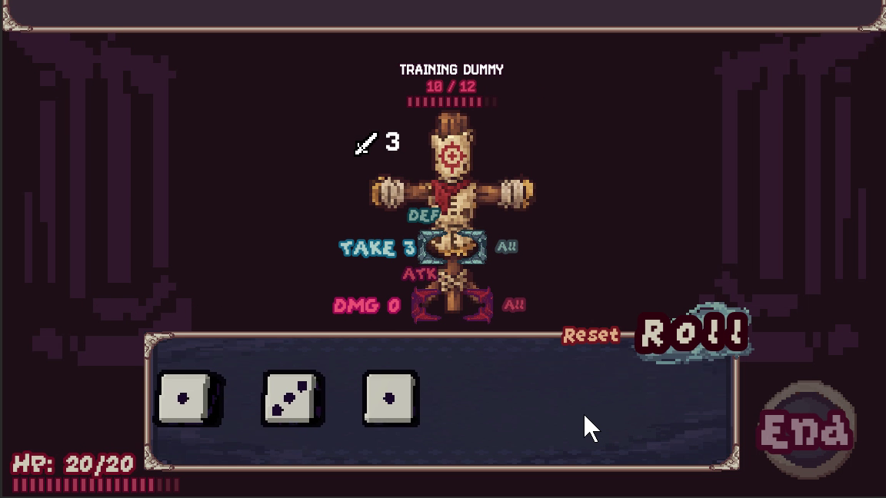
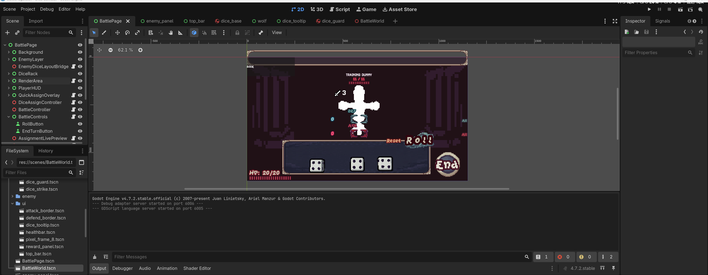
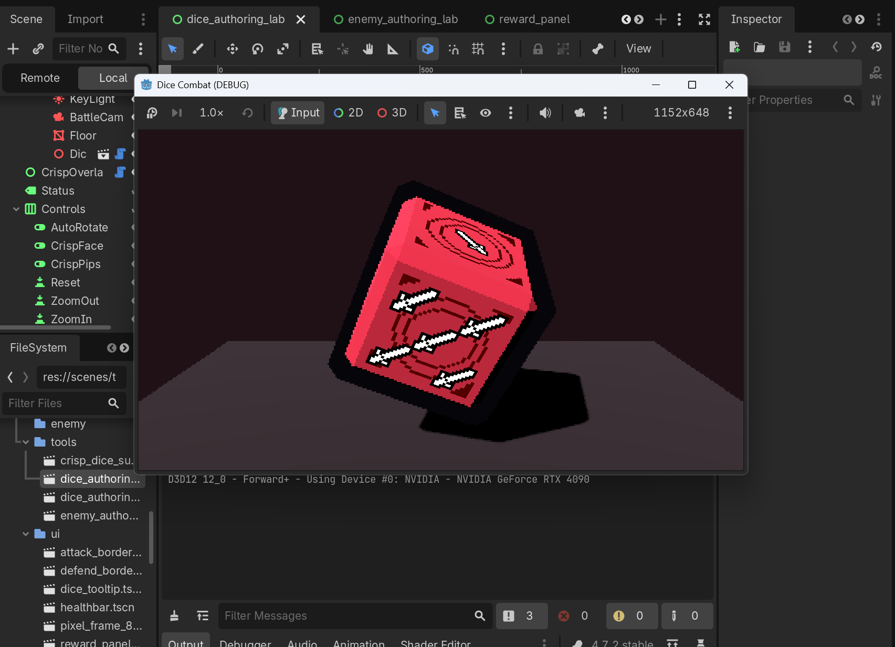

01 / CONQUER
Conquer
Playable prototypeCan a war game stay easy to control without collapsing into “bigger number wins”?
Explore case study ↘I like taking complicated systems and stripping away the busywork. I want simple controls, but enough context that the same action can mean very different things.
FEATURED WORK
These are the two projects I have spent the most time actually playing, breaking, and rebuilding.
Can a war game stay easy to control without collapsing into “bigger number wins”?
Explore case study ↘Can a roll that looks bad still become the best move?
Explore case study ↘ONGOING R&D / ALLIFE
ALLife is where I pushed autonomous characters the furthest. The world keeps running on its own, and I wanted the people inside it to notice things, remember them, build relationships, and make choices without me directly controlling every action.
Current status: still R&D. The project got much bigger than I expected and parts of the codebase need reworking, so I am showing the ideas I learned from it rather than pretending it is a finished game.
How can the player change circumstances while characters keep ownership of their next action?
How can one objective event become different perceptions, memories, and relationship consequences?
How do WHAT, WHY, Mind, Relationships, and Life turn hidden simulation state into readable play?

SELECTED PROJECTS
Other things I built while trying different kinds of interaction, multiplayer flow, and combat rules.
Competitive drafting and strategy flow built around ridiculous fighter concepts.

A bright multiplayer word prototype where parallel progress creates pressure without interrupting your own puzzle.

An earlier combat experiment around simultaneous attack, defense, charge, traits, and persistent status effects.
CASE STUDY / CONQUER
I like war games, but I kept getting pushed away by how much time goes into menus, production, logistics, and little management tasks. With Conquer, I wanted to strip most of that away and focus on moving troops, choosing where to fight, reinforcing a front, retreating, and controlling the battle itself.
Keep attention on the map. Repositioning should feel like moving an army, not operating a control panel.
Shape, value, color, spacing, and motion carry tactical information at a glance.
Depth comes from positioning, merging, splitting, terrain, pressure, and AI behavior.
DESIGN PROCESS
The first version was basically “find the smaller number and click it faster.” Most of the project since then has been me asking: can I add a real decision without adding another annoying control?
Cities produced troops, larger numbers beat smaller numbers, and early advantages snowballed into endless drag-and-click expansion.
Armies could stop outside cities using the same drag input, creating interceptions, staging, baiting, reinforcement, and route control.
A city soldier cap created an exploit; Hunger patched the exploit. That complexity led me back toward a simpler global capacity model.
Large losses now reduce future reinforcement, so a battle can be won tactically while leaving the empire strategically weaker.
BUILDING GRAMMAR
I wanted every building shape to answer one clear strategic need, so I could look at the map and immediately understand why a place mattered.
Troops inside gain strong defensive value, turning a city into a position worth fighting around.
Greatly increases recruitment speed. Capacity alone is useless if losses cannot be replaced quickly enough.
Improves damage output and makes favorable casualty exchanges possible, especially when manpower is scarce.
Raises the soldier limit. Valuable for expansion, but currently important enough that I still consider its balance unresolved.
Provides an initial movement boost, making reinforcement timing and long-distance response more flexible.
THE DECISION IN PLAY
This is the kind of moment I actually enjoy in the game: I am not thinking about which button to press. I am deciding what I can afford to lose, what I need next, and whether I should fight at all.
PLAYTEST EVIDENCE
I saved this replay because I genuinely thought the match was over. I was down to roughly 140 soldiers and 5 cities while the last AI had about 1,192 soldiers and 35 cities. I dropped back to 1× speed and started microing every useful trade I could get.
The AI definitely made mistakes, so I am not claiming 140 should normally beat 1,192. What I liked was that the game still gave me things to think about after I had basically written the match off.
READABLE EXHAUSTION
Repeated losses lower formation stability. Instead of hiding that only in a stat, soldiers visibly shake and spread apart as the formation approaches collapse. A badly exhausted army can then be routed by a much smaller fresh force.
ALTERNATE VICTORY / KING MODE
King Mode gives every faction a physical leader. With War Mist hiding information, I can fake pressure somewhere else, pull troops away, and try a decapitation strike instead of winning the whole war normally.
ITERATION
A lot of Conquer iteration has just been this: if I can express the same intention directly on the battlefield, I would rather do that than add another permanent control.

AUTHORING & TESTING
I use the map tools to quickly change distance, choke points, density, and starting positions, then see whether the same systems still create interesting decisions.

CASE STUDY / DICE COMBAT
Dice Combat started from a simple problem: rolling dice feels good, but what makes the decision after the roll interesting? The fun started once a 1 could sometimes be more useful than a 6.
DESIGN PROCESS
The first version was too obvious: big number good, small number bad. I wanted the enemy and combo rules to make me stop for a second and actually decide where each die should go.
The roll looked random, but the decision afterward was mostly arithmetic. Low faces felt like failed resources.
SOFT rewards low faces, ARMOR favors large independent hits, JACKPOT rewards exact values, and INVERSE can make the smallest die strongest.
Attack, Guard, sequence order, initiators, and operators make “where does this die go?” more important than its printed number alone.
In one playtest, a chain of low faces amplified through Fury, Split, Light, and an enemy low-face weakness exploded into a lethal sequence.
VALUE MARKETS
I want the exact same roll to feel different against a different enemy. The puzzle should come from re-evaluating what I have, not just fighting a bigger HP bar.
Fewer, larger independent attacks become efficient.
Small rolls receive a large bonus and suddenly become premium resources.
One specific face can become more valuable than the highest roll.
Lower effective faces deal more damage, flipping the normal hierarchy.
The puzzle moves from individual dice to the combined value of the full attack lane.
BUILD MOMENT
This is the kind of turn I wanted. I had a bunch of low dice that looked pretty bad, but Fury, Split, Light, and an enemy weakness for ≤3 values all lined up. The “bad” dice kept feeding one another until the whole sequence became lethal.
INTERACTION GOAL
There are not that many actions in the game, so every one of them has to carry weight. That is why I spent so much time on drag behavior, assignment previews, attack/defense readability, and the feel of committing a die.



ABOUT
Leo Li / 2026I'm Leo Li. I mostly work on systems, technical prototypes, and game UX. I like getting an idea playable early, because I usually do not really understand the design until I can break it myself.
That has led me into a lot of different things — large-scale strategy, dice combat, multiplayer UI, and autonomous simulation. Some projects are polished; some are experiments I kept because they taught me something useful.